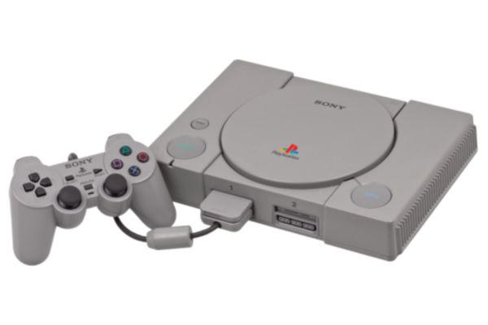
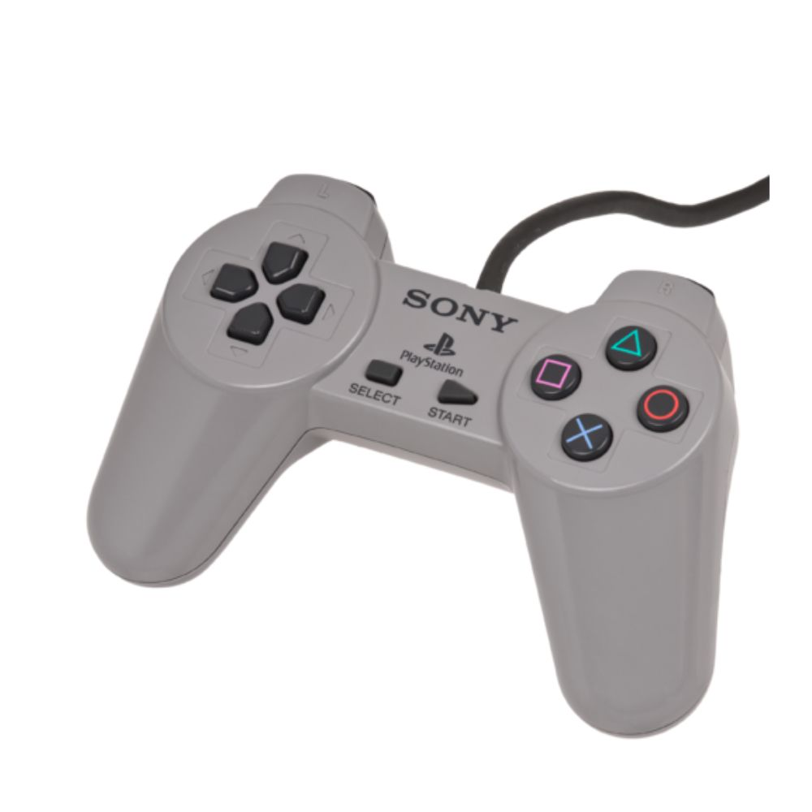
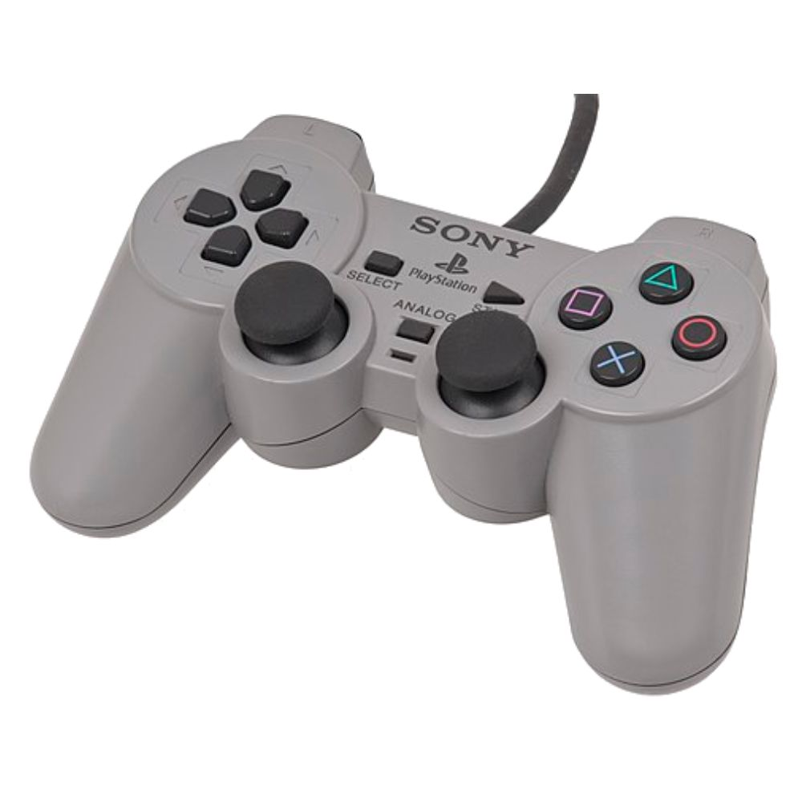
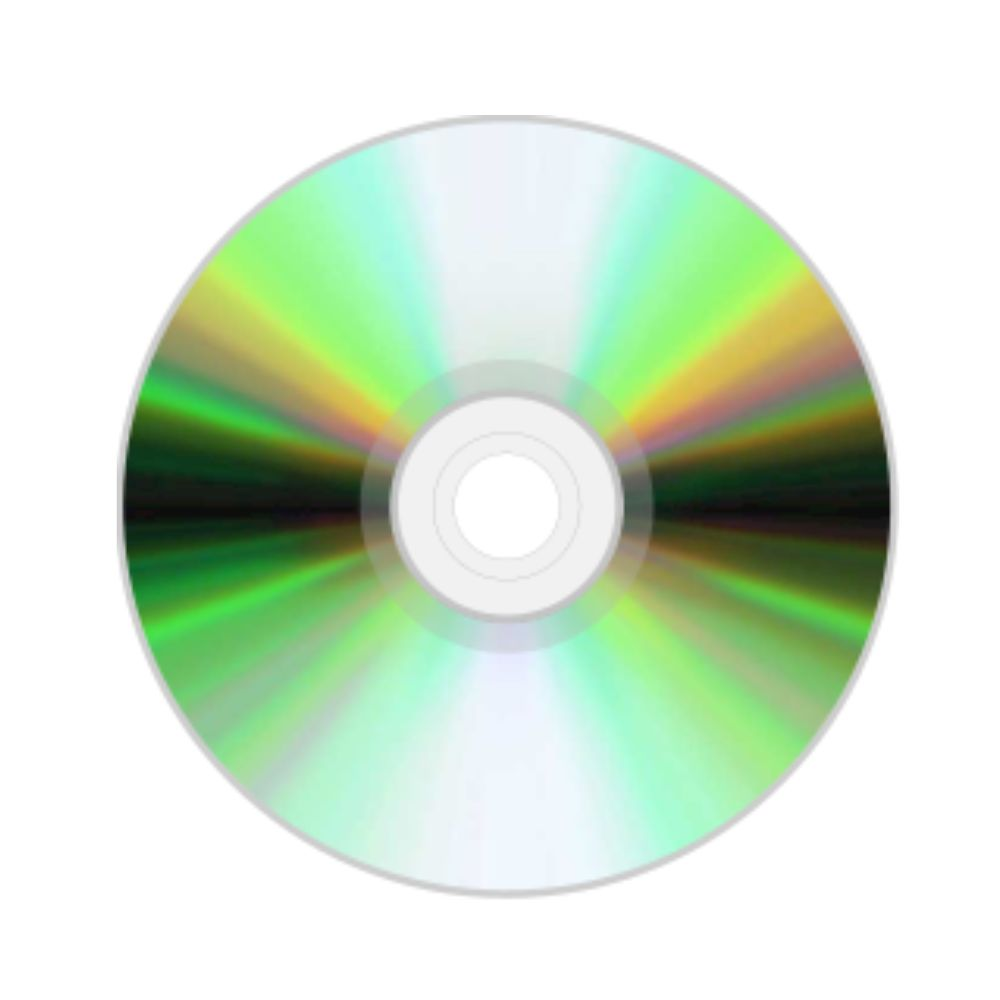

PlayStation

O PlayStation (プレイステーション, Pureisutēshon; oficialmente abreviado PS, comumente chamado de PlayStation 1 ou PS1/PS one) foi o primeiro console de videogame fabricado pela Sony, lançado em 3 de dezembro de 1994 no Japão, 9 de setembro de 1995 nos Estados Unidos e em 29 de setembro de 1995 na Europa.
O desenvolvimento do console começou após uma parceria fracassada com a Nintendo de desenvolver um CD-ROM para seu console Super Nintendo no início dos anos 1990. A produção de jogos para o console foi projetada para ser simplificada e inclusiva, trazendo o suporte de muitas desenvolvedoras terceiras. Em julho de 2000, uma versão melhorada e mais fina chamada de PS One foi lançada, substituindo o console cinza original e nomeado apropriadamente para evitar confusão com seu sucessor, o PlayStation 2.
O PlayStation introduziu a Sony para a indústria de jogos eletrônicos. O uso de CDs para o armazenamento dos jogos no console foi uma transição dos cartuchos utilizado por outras empresas de jogos. Desde o seu lançamento até 2006, quando sua produção foi interrompida, o PlayStation vendeu mais de 100 milhões de unidades. Ocupa a posição de sexto console mais vendido no mundo, com mais de cem milhões de unidades vendidas. Foi sucedido pelo PlayStation 2, que teve mais de 150 milhões de unidades comercializadas. Seu último lançamento oficialmente licenciado pela Sony foi um relançamento de Metal Gear Solid em Metal Gear Solid The Essential Collection lançado em 18 de março de 2008, neste lançamento contem 3 jogos, sendo o primeiro para PlayStation 1 e os outros dois para PlayStation 2.
História
O início do que se tornou o PlayStation remonta a 1986 com uma joint venture entre a Nintendo e a Sony. A Nintendo já havia produzido a tecnologia de disquete para complementar os cartuchos, na forma do Family Computer Disk System, e queria continuar essa estratégia de armazenamento complementar para o Super Famicom. A Nintendo procurou a Sony para desenvolver um complemento de CD-ROM, provisoriamente intitulado "Play Station" ou "SNES-CD". Um contrato foi assinado e o trabalho começou. A escolha da Nintendo de alguém com quem eles haviam trabalhado antes, Ken Kutaragi, que mais tarde foi chamado de "O Pai do PlayStation", foi o indivíduo que vendeu a Nintendo usando o processador Sony SPC-700 para uso, como o som ADPCM de oito canais definido no console Super Famicom/SNES através de uma impressionante demonstração dos recursos do processador. A empresa de videogame, no entanto, rompeu com a Sony, uma neófita da indústria, porque considerou que perderia muito controle e benefícios derivados da venda de jogos em CD
Kutaragi quase foi demitido pela Sony porque ele estava originalmente trabalhando com a Nintendo sem o conhecimento da Sony (enquanto ainda estava empregado pela Sony). Foi então que o CEO Norio Ohga, que reconheceu o potencial do chip de Kutaragi e trabalhou com a Nintendo no projeto. Ohga manteve Kutaragi na Sony, e não foi até a Nintendo cancelar o projeto que a Sony decidiu desenvolver seu próprio console.
A Sony lançou o PlayStation no Japão em 3 de dezembro de 1994. O sucesso foi imediato. A chave estava nas instalações oferecidas pela empresa aos desenvolvedores de videogames, empolgadas com as grandes possibilidades técnicas, as três dimensões e o disco. Os desenvolvedores assumiram vários riscos financeiros ao criar cartuchos para Sega ou Nintendo; pelo contrário, a Sony ofereceu todas as facilidades para ter um catálogo variado de jogos. Imediatamente os grandes nomes do setor se juntaram. Títulos como Gran Turismo, Metal Gear ou Final Fantasy são história fundamental dos videogames.
Controles

O controle do PlayStation foi lançado em diferentes modelos ao longo da vida do console. A primeira versão possui quatro botões direcionais individuais (diferente do D-Pad convencional), um par de botões de ombro em ambos os lados (L1 e L2; R1 e R2), botões "Start" e "Select" no centro e quatro botões compostos por formas geométricas simples: um triângulo verde, círculo vermelho, um X azul e um quadrado rosa. O design foi completamente inovador e bastante ergonômico, graças às duas saliências inferiores para melhor empunhadura das mãos, veio a se tornar quase um molde para controles de plataformas futuras (de fato, para os PS seguintes o formato permaneceu inalterado enquanto que para a maioria das outras plataformas o desenho foi tomado como base). Com a crescente popularidade de jogos em 3D, a Sony precisava implementar analógicos para que a experiência em ambientes 3D fosse melhorada. O primeiro controle com analógicos, o Dual Analog Controller, foi revelado ao público na PlayStation Expo de 1996 no Japão, e posteriormente lançado em abril de 1997, coincidindo com os lançamentos japoneses dos títulos Tobal 2 e Bushido Blade. Além das duas novas alavancas analógicas, o Dual Analog possui um botão chamado "Analog" abaixo dos botões "Start" e "Select" que ativam ou desativam a função analógica.

Foi o primeiro controle a trazer "botões de ombro" (shoulder buttons) nas bordas, chamados L e R (L''eft e R''ight - Esquerda e Direita). Geralmente são usados para movimentar a câmera de jogo, mas também possuem outras funções dependendo do jogo em questão. Todos os consoles seguintes copiaram esses botões (notavelmente, o PlayStation duplicou os botões de ombro).
Havia também uma peculiaridade nos botões em cruz. Os superiores (dado a inclinação da cruz), Y e X, possuíam formato côncavo, enquanto os inferiores convexo. Tal formato tornava a jogabilidade mais prazerosa em jogos como Super Mario World e Donkey Kong Country, em que o botão superior Y ficava permanentemente pressionado para dar velocidade, e o botão inferior era usado simultaneamente para outras funções (no caso dos dois jogos mencionados, o pulo).
A versão japonesa/europeia do aparelho traz os botões em cruz em quatro cores diferentes: verde, azul, amarelo, vermelho, respectivamente aos botões Y, X, B e A, enquanto na versão norte-americana, os botões côncavos Y e X tinham coloração lilás e os botões convexos B e A roxo.
Jogos
O título mais vendido do console é Gran Turismo, que vendeu 10,85 milhões de unidades. Após a descontinuação do console em 2006, a remessa acumulada de software foi cerca de 962 milhões de unidades. Seu último lançamento foi Metal Gear Solid: The Essential Collection lançado em 18 de março de 2008, o primeiro jogo da coleção contem uma versão do primeiro titulo da franquia para PlayStation 1 e os outros dois titulos para PlayStation 2, sendo esse o ultimo licenciado oficialmente pela Sony para o console.

O console possui uma biblioteca de jogos diversificada que serviu para atrair todos os tipos de jogadores. Os jogos de lançamento foram Jumping Flash! e Ridge Racer, com o primeiro sendo anunciado como um ancestral para gráficos 3D em jogos de console. Os principais jogos do PlayStation incluíram títulos aclamados pela crítica, como Final Fantasy VII, Crash Bandicoot, Spyro The Dragon, Metal Gear Solid e Tekken, com todos os jogos gerando novas sequências posteriormente e tornando-se franquias estabelecidas no mercado de jogos eletrônicos. O título Final Fantasy VII foi importante por permitir que jogos de RPG ganhassem mais popularidade fora do Japão e é considerado um dos melhores jogos de videogame já feitos.
Disney's Tarzan:Gameplay- demonstração do jogo.
Especificações
| CPU | GPU | ||
|---|---|---|---|
| Fabricante: | LSI Logic Corp R3000A RISC |
Fabricante: | Sony CXD8561CQ |
| Clock: | 33,8 MHz | Clock: | 53,2 MHz |
| Barramento: | 32 bits | Cores: | 16,7 milhões (24-bit RGB) |
| Desempenho: | 30 MIPS | Resolução: | 256 x 224 até 640 x 480 |
| Largura de Banda: | 132 MB/s | Polígonos: | 360.000 por segundo |
| Data Engine (MDEC): | 80 MIPS Compatível com JPEG e H.261 |
3D Geometry Engine: | 66 MIPS 1,5M polígonos flat-shaded/s 500k texturizados e iluminados/s |
| Áudio | Mídia | ||
| Canais: | 24 (ADPCM) | Formato: | CD-ROM |
| Frequência de amostragem: | 44,1 kHz | Capacidade: | 700 MB |
| Velocidade: | 2x (Double Speed) | ||
| Padrão: | XA-Compliant | ||
| Multiplayer: | Até 8 jogadores com multitaps | ||
| Memória | |||
| RAM principal: | 2 MB | VRAM (vídeo): | 1 MB |
| Sound RAM: | 512 KB | CD-ROM buffer: | 32 KB |
| ROM do sistema: | 512 KB | Cartão de memória: | 128 KB (EEPROM) |